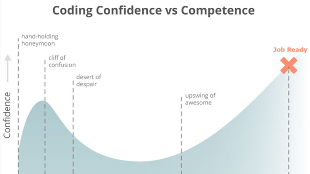

For the most part, I haven't been subjected to impostor syndrome mostly because I haven't done anything amazing or worthwhile that would lead me to feel this way. I've always admitted I'm not naturally smart and that I worked hard to get where I am, so I don't feel that "people would find me out as being a fraud". I never claimed to be intelligent, just determined to succeed. However recently I've noticed that I may be experiencing this to some degree. My preparation prior to beginning Phase 0 seems to have caused others to think I'm more capable than I really am. But the thing is, I used to struggle too. I went through my period of not knowing what the hell was going on and getting frustrated and upset. I also had times where I thought maybe I can't do this (refer to the next section on stereotype threat for more on this) and what the heck and I'm getting myself into. Just like the graph below shows, I had a short honeymoon period (when I did easy to follow online tutorials) followed by a huge cliff of confusion (once I got more in depth) then a desert of despair (when I was left to learn and teach myself). It wasn't until I started Phase 0 that I finally made it to the upswing of awesome. Although technically the article defines the upswing of awesome as "being job-ready competent," for me the upswing of awesome is the part where I'm feeling confident again that I can do this. So perhaps there should be another confidence peak on the graph prior in between the desert of despair and the upswing of awesome.

The point is, I had my struggles, went through my own trials, and had many bouts of getting frustrated over not knowing anything to get to where I am today. I fear that people don't know this about me and thus see someone that is toward the higher end of the bell curve. While I admit I love this judgment of my abilities, it has also caused to worry a bit about what people think of me after they pair with me. When I make mistakes or take longer to think things through or need more explanation, I fear that this'll cause others to think they misplaced their judgment of my abilities and from then on just see me as being average. I don't think this has caused actually negative repercussions so far but it adds another worry on my plate and could potentially become something real and affect my achievements. Acknowledging this is definitely the first step and I know I need to change my thinking. I know I shouldn't fear such judgments but focus on what I can contribute and the value I bring instead.
I have certainly had the un-pleasure of being impacted by stereotype threat and feeling that my social identities has limited my prospects in one way or another--and all before I knew such a term existed. One that especially comes to mind is my gender identity.
"Stereotype threat is the threat of being viewed through the lens of a negative stereotype or the fear of doing something that would inadvertently confirm that stereotype." What this means is that by fearing you may confirm a negative stereotype placed upon you by your social identity, you end up causing yourself to do just as the stereotype assumed. Or in other words, you're subconsciously handicapping yourself and "supporting" that stereotype.
When I was starting my programming journey, I suffered from this. I discussed the possibility of going down the tech route and becoming a developer with my family and friends but I soon became doubtful of this endeavor. I questioned whether it was for me and whether I could do it. I had been told by a friend (female) in the IT industry that programming is hard and that it's actually very rare for women to be in hard-core tech positions (compared to hers that was more like the middle from the techies to the client-side). This caused me to doubt myself and my abilities to pursue the field. I thought that since I wasn't a stereotypical computer nerd, I wouldn't succeed in this pursuit. It wasn't until I discussed this with a male friend in the tech industry that I regained some self-confidence in my abilities. He told me he believed I could do it and that the tech industry isn't just for certain types of people and I shouldn't worry about it. (Although I must note that my male friend had seen my abilities in the STEM field as we went through a Science, Math, and Technology program in high school together whereas my female friend has never actually had the chance to see my academic work firsthand since we never had class together.)
I worry that this threat will become more prominent either during on-site at DBC or after completing the program. Since I'm still in the prep stages, it isn't that big of a deal but I am scared that my gender may be a limiting factor. Reading about the issue of women in technology has certainly given rise to this fear. I think being able to identify this threat will help reduce it's negative impact though. By understanding what stereotype threat is, I can actively try to reverse the pressure and distress it would potentially cause. Just as the studies show, when there is no stereotype threat black students did just as well as their white counterparts, this proves that as long as I can identify possible threats, I can make a conscious effort to avoid handicapping myself and conforming to said stereotypes.